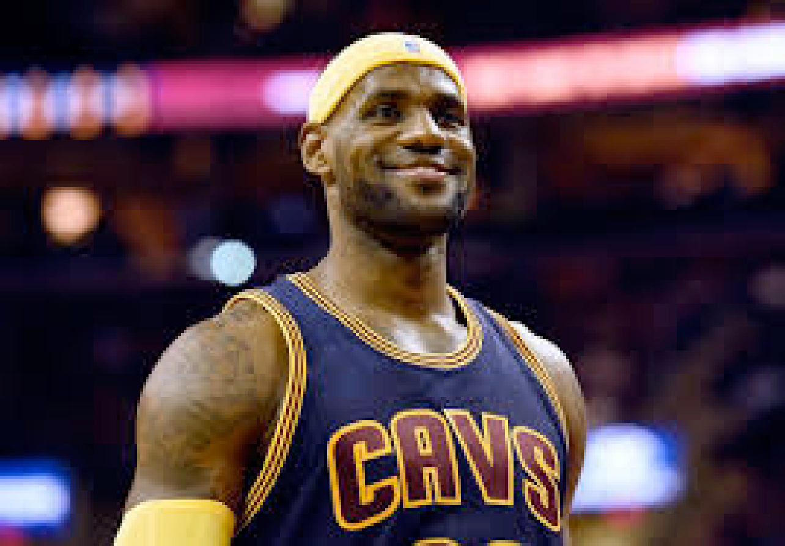

Welcome to LeBron Wiki! This is a site where LeBron James’ NBA career is
documented for people all over the world to see! No matter if you are a fan
or not, this site is meant to express the greatness that LeBron has
displayed throughout his legendary career. The entire purpose of this site
is to bring not only LeBron fans together, but basketball fans together in
general! Enjoy!
LeBron has been on three different teams at four different parts of his
career. To see how his time with these teams panned out, click on the links
below!
Cleveland Cavaliers (2003-2010) Miami Heat (2010-2014) Cleveland Cavaliers
(2014-2018) Los Angeles Lakers (2018-Present)
LeBron took the league by storm in his rookie year, averaging 20.9 points
per game. He also won the Rookie of the Year award for his performance that
season. During this tenure, he led the Cavaliers to an Eastern Conference
Championship in the 2006-2007 season. He also won the NBA Scoring Title in
the 2007-2008 season. He won the NBA MVP award in back-to-back seasons
during his first stint with the Cavs as well.
LeBron’s time with the Heat was arguably his most accomplished part of his
career. He won each of these awards twice: MVP, Finals MVP, and NBA
Champion.
LeBron made his highly anticipated return to the Cleveland Cavaliers in 2014
after 4 seasons with the Miami Heat. In 2016, he would lead the Cavs to
their first NBA championship in franchise history. He also won his third
Finals MVP.
LeBron decided to go to the Western Conference for the first time in his
career in 2018. He would win his 4th NBA Championship and Finals MVP during
the pandemic-ridden 2020 season. He is currently still a member of the
Lakers.